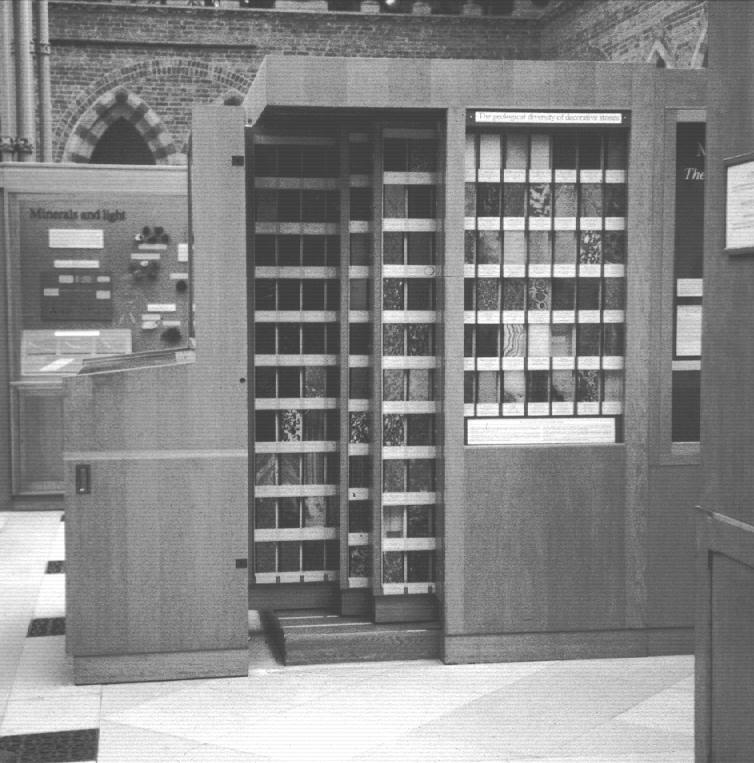

Portrait of Corsi from his catalogue published in 1823
From crystals to decorative rocks - the Corsi Collection in Oxford
Marbles, granites, serpentines, and other decorative rocks were highly
prized by the Ancient Romans. The beautiful stones imported into Rome from
quarries throughout the Empire continued to be esteemed and were often
recycled by later generations. In the early nineteenth century, a lawyer in
Rome called Faustino Corsi started to collect the 'marbles' of his home
city. He first sought all the stones used by the Ancient Romans, extended
his search to include those from contemporary Italian quarries, and then
started to collect other decorative minerals from localities world-wide. In
doing this, Corsi was continuing a long tradition of marble collecting and
scholarship in Italy. Corsi's collection is remarkable for a number of
reasons. Firstly, he insisted on obtaining large slabs, each one 15x10x4
cm, polished on front and sides. This size would be far more useful for
matching and identification than the small squares typical of other
collections. Secondly, Corsi took particular trouble to document his
collection, having his catalogue of the first 900 stones printed in 1825.
As far as he could, he correlated the stones with descriptions given by
Theophrastus, Pliny and other Ancient authors, collating the old and modern
names. He also drew on the descriptions of contemporary travellers,
surveyors, mineralogists and mining engineers, such as Ferber, Brard and
Brogniart, and the oral tradition of the marble masons and workers in Rome.
Thirdly, Corsi was the first to try to classify decorative stones according
to their geological nature.
Portrait of Corsi from his catalogue published in 1823
Rocks are composed of minerals, usually a mixture but sometimes of just one species. Pure white statuary marble, for example, is composed of calcite (CaCO3), the crystals tightly interlocking to give an even grain and a strong structure in all three dimensions. This structural integrity derived from a tight intergrowth of crystals is one of the keys to a good decorative rock. Durability is another, and while alabaster (composed of compact gypsum, CaSO4.2H2O), is quite soft and easily carved, the limestones and marbles (composed of calcite or dolomite, CaMg(CO3)2) are harder, and stones composed of quartz (SiO2) and other anhydrous silicate minerals are generally harder still. These include jaspers, agates, 'puddingstones' and granites. The harder the minerals, the higher the polish that the stone can take.
No less important is the aesthetic quality of the stone. Many rocks are strikingly beautiful when cut and polished, and colours can be vivid. Yellows, reds, pinks, oranges and browns are usually due to trace iron oxides/hydroxides; greens are generally iron-bearing silicate minerals; blacks are due to trace manganese minerals or organic material. Textures range from banding and veining, to speckling or 'flowering'. Brecciated rocks, formed of large and small fragments naturally cemented together, are common. Some of the best known ancient stones are the porphyries, igneous rocks with larger crystals, typically of feldspar, in a fine-grained ground-mass. The Egyptian 'porfido rosso antico' has white or pink feldspar in a deep purple-red ground-mass, while the Greek 'porfido verde antico' has pale green angular feldspar crystals in a dark green or purple ground mass.
In 1826 Corsi was in negotiations with the British architect Sydney Smirke over the sale of his collection to a 'friend' of Smirke's. We now know that the 'friend' was the British Museum, but while the Museum Trustees deliberated, Corsi was visited by Stephen Jarrett, a young gentleman commoner of Magdalen College, Oxford. Jarrett offered not only to purchase the collection as a gift for the University, but also asked Corsi to make the collection up to 1,000 specimens, a supplementary catalogue being printed at Jarrett's expense. This offer evidently charmed Corsi, and by November 1827, the collection had arrived in Oxford, where it was arranged in special display cases in the Radcliffe Library (now the Radcliffe Camera).
The whole of the Radcliffe Library was moved to the new University Museum in about 1861; at the turn of the century the Library moved again to a new building adjacent to the Museum leaving the Corsi Collection behind as part of the Mineral Collections of the Museum.
The first Waynflete Professor of Mineralogy and Crystallography, Henry
Miers, appreciated both the historic and the scientific value of the
collection, which by the end of the nineteenth century had been sadly
neglected. Mary Porter, when still a teenager, showed a particular interest
in the stones, a consequence of her encounters with eminent archaeologists
in Rome while her father was stationed there as a reporter for The
Times. Miers encouraged this interest and set her to work sorting and
re-displaying the collection, and translating the catalogue into English.
Mary Porter's book What Rome was built with was published in 1907.
Under Miers's tuition Mary Porter moved on from the study of ornamental
stones to the measuring of crystals, the subject to which she dedicated much
of her long life, later becoming the co-Editor of the Barker Index of
Crystals.

The specially built cabinet which houses the Corsi collection in the
University Museum in 1999.
Over the years, the Corsi collection has been used by archaeologists,
geologists, architects and artists, antique dealers and restorers. It is
one of the finest reference collections of ancient and modern stones in the
world, and is now supplemented by a further 850-900 samples of ornamental
stones from localities world-wide, and by the 127 fine polished pillars of
British and Irish rocks which form part of the structure of the Museum
building. The interest in and use of the collection has increased in recent
years, and a fully illustrated catalogue is in preparation. The new
English translation is by Mrs Lisa Cooke, whose work on the Corsi project is
gratefully acknowledged.
Corsi never left Rome while making his collection; his ancient stones come from the ruins of the City while the 'modern' ones were obtained through the services of agents. Corsi could only deduce the quarry locations of many 'ancient' stones from the writings of the Ancients. Since Corsi's time many of those quarries have been re-discovered, and a number of his deductions have been corrected. It also appears that Corsi's agents had led him astray with incorrect localities for some 'modern' stones, and we are grateful for the help of colleagues as we work on checking and correcting Corsi's locality information for the new catalogue. This, along with a history of the collection (of which this is a much abbreviated version) and additional geological data, will make the Corsi collection accessible to scholars, world-wide.
Selected specimens are on display in the Museum, and visitors are most welcome to see, by prior appointment, the whole collection. The Museum is open daily 12.00-5.00, admission is free.
Monica T. Price, Assistant Curator, Mineral Collections,
Oxford University Museum of Natural History,Parks Road, Oxford OX1 3PW, UK.
Tel. 01865 272950, fax 01865 272970.
Page last updated 8 Jun 1999
 Click here to return to BCA homepage
Click here to return to BCA homepage